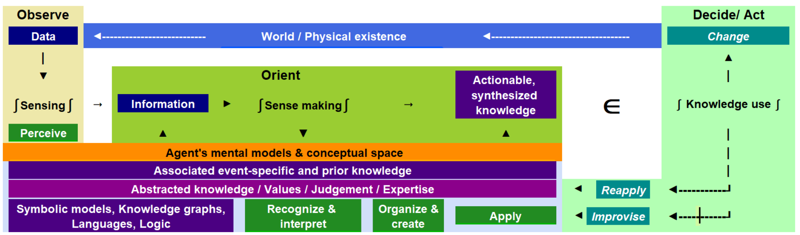

kfam's organized around three core concepts: agents, artifacts, and behaviors. Those three concepts are sufficient to describe a knowledge flow.
Agentsact, make decisions, and exhibit behavior. The set of agents comprise individuals, organizations, systems, and automated agents (bots).
Artifacts are physical or conceptual objects.
Knowledge can also be characterized through such distinctions as
Knowledge artifacts (ka) and meta-knowledge artifacts (mka)
Data, information, knowledge
Explicit, implicit, and tacit forms
Behavior comprises actions and decisions. Knowledge enables behavior. Co-location of knowledge and decisions generally improves performance. Behavior goes by many different names in different contexts.
Policy is what you do. Policy is behavior. Written policies are only guidance. The pages don't act. Ideally, they are semantic triggers, triggering the intended behaviors by the acting agents.
Meaning is behavior. Words have no meaning without action. Knowledge flows and lifecycles comprise such behaviors as knowledge creation, retention, transfer, use, and destruction.
Values are disassociated and abstracted knowledge systems that synthesize pattern recognition and evaluation to quickly apply established logic to operational details with minimal thought. They represent distilled and automated behaviors. Unscripted life requires active management systems; automate the operational details. Novelty focuses active attention, thinking, and — if there isn't too much fear — creativity.
While agent, artifact, and behavior are enough to describe a knowledge flow, additional details help with detailed analysis and engineering. The following diagram relates the kfam “data ∫ information ∫ knowledge ∈ behavior” model with Sowa's concepts and OODA loops, the process that fighter pilots use to Observe, Orient, Decide, and Act.
Figure 20. Knowledge flows associated with knowledge enabling behavior
|  |